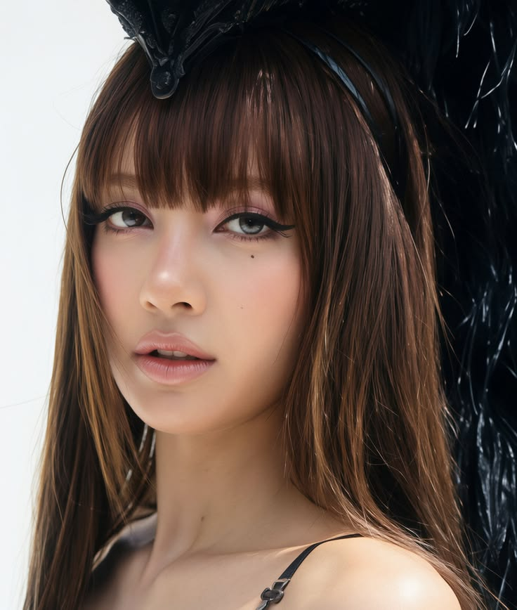
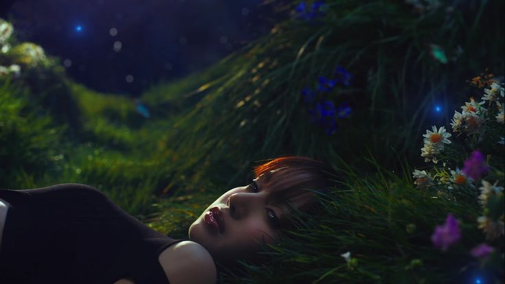
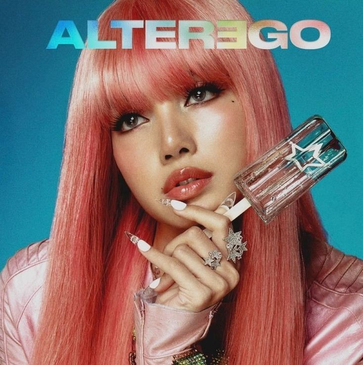
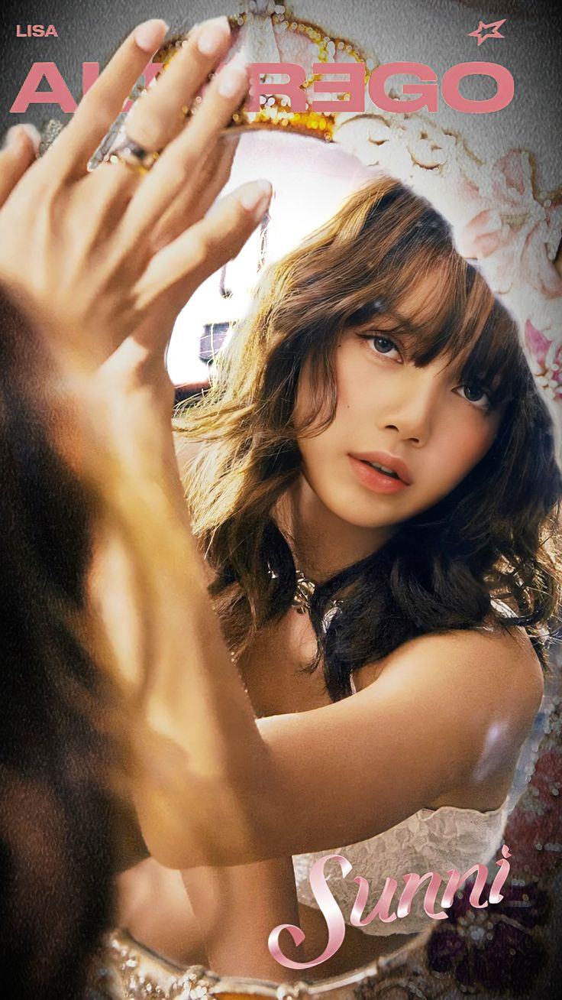
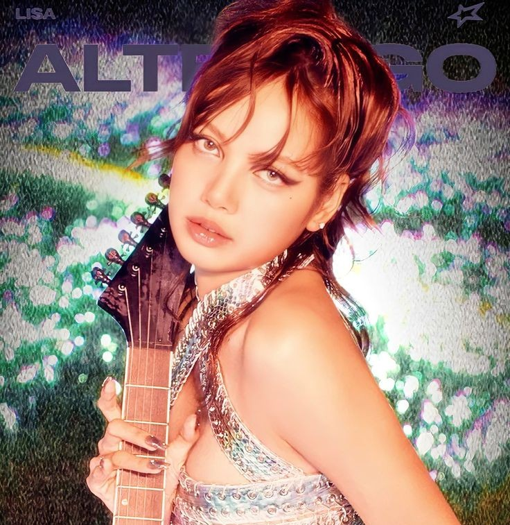
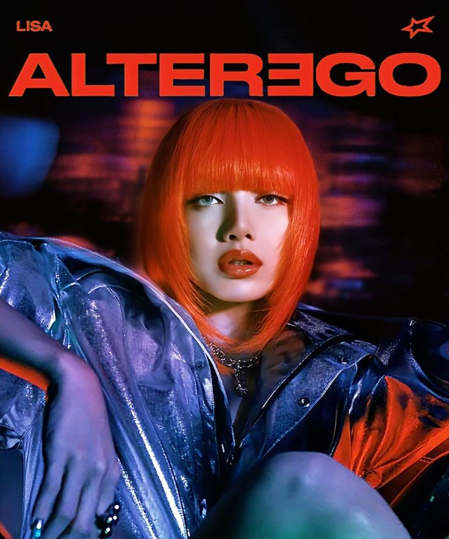

01 / THE ICON
THE
ICON
Lalisa Manoban, conhecida como Lisa, nasceu em 27 de março de 1997, na Tailândia. Desde jovem, demonstrou talento e paixão pela dança e pela música. Aos 14 anos, mudou-se para a Coreia do Sul após ser aprovada em uma audição da YG Entertainment.
Em 2016, estreou como integrante do BLACKPINK, tornando-se conhecida mundialmente por sua dança, rap e presença de palco. Em 2021, iniciou sua carreira solo com o álbum LALISA. Desde então, expandiu sua atuação na música, na moda e no entretenimento, fundando sua própria empresa, LLOUD, e lançando seu primeiro álbum de estúdio, Alter Ego, em 2025.
Lisa se consolidou como uma artista tailandesa de destaque internacional, reconhecida por sua versatilidade, estilo e talento artístico.

LALISA / 0102 / ON STAGE
ON STAGE

LIVE PERFORMANCE01
ICONIC
MOMENT
Presença, energia e atitude são elementos que fazem das performances de Lisa momentos marcantes.
LIVE • LOUD • ICONIC
03 / THE JOURNEY
THE JOURNEY
THE BEGINNING
Lalisa Manoban nasce na Tailândia e começa sua trajetória artística desde jovem.
A NEW DREAM
Aos 14 anos, Lisa muda-se para a Coreia do Sul após ser aprovada em uma audição da YG Entertainment.
BLACKPINK
Lisa estreia como integrante do BLACKPINK e passa a conquistar reconhecimento internacional.
LALISA
Lisa inicia oficialmente sua carreira solo com o lançamento de seu projeto LALISA.
ALTER EGO
A artista lança seu primeiro álbum de estúdio, Alter Ego.
04 / THE LOOKS
THE LOOKS

ROCKSTAR
ICONIC
SUPERSTAR
LALISA05 / ICONIC MOMENTS
ICONIC
MOMENTS
01
THE BEGINNING
Uma trajetória que começou na Tailândia e ganhou novos caminhos na Coreia do Sul.
02
THE STAGE
Dança, rap e presença de palco tornaram-se marcas importantes de sua carreira.
03
THE SOLO
LALISA marcou uma nova etapa em sua carreira como artista solo.
04
THE LEGACY
Música, moda e entretenimento fazem parte da expansão de sua identidade artística.
06 / A LETTER TO LISA
DEAR LALISA,
KEEP
SHINING.
Uma homenagem a uma artista que transformou sua trajetória em expressão, presença e identidade. Que cada novo palco seja mais um capítulo dessa história.
★ LALISA ★